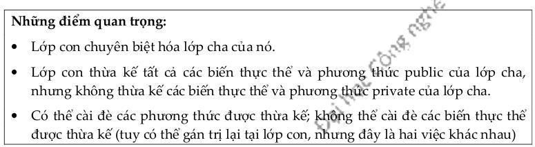
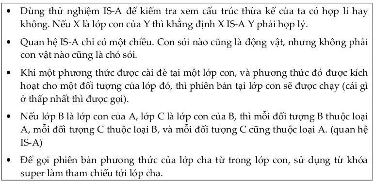

Đến đây, ngoài hai từ khóa public và private quy định mức truy nhập, ta đã có thể học thêm về loại protected (được bảo vệ). Mục này tổng kết các kiến thức về các loại quyền truy nhập mà Java quy định.
Ta có bốn mức truy nhập (access level) và ba từ khóa tương ứng private, protected và public, mức còn lại là mức mặc định không cần từ khóa. Các mức truy nhạp được liệt kê theo thứ tự từ chặt tới lỏng như sau:
public và private là hai mức được sử dụng nhiều nhất. Mức public thường dùng cho các lớp, hằng (biến static final, xem chi tiết tại Mục 10.6), các phương thức dành cho mục đích tương tác với bên ngoài (ví dụ các phương thức get và set), và hầu hết các hàm khởi tạo. Private được dùng cho hầu hết các biến thực thể và cho các phương thức mà ta không muốn được gọi từ bên ngoài lớp (các phương thức dành riêng cho các phương thức public của lớp đó sử dụng).
Mức mặc định được dùng để giới hạn phạm vi trong một gói (xem thêm về gói tại Phụ lục B). Người ta dùng giới hạn này vì gói được thiết kế là một nhóm các lớp cộng tác với nhau như là một tập hợp gắn bó với nhau. Trong khi tất cả các lớp bên trong cùng một gói thường cần truy nhập lẫn nhau, chỉ có một nhóm trong số đó cần phải để lộ ra ngoài gói, nhóm này sẽ dùng các mức public hay protected một cách thích hợp. Lưu ý rằng nếu lớp có mức protected, thì các phương thức bên trong nó dù có thuộc mức public thì bên ngoài cũng không thể 'nhìn thấy', do không thể nhìn thấy lớp chứa các phương thức đó.
Mức protected gần như giống hệt với mức mặc định, chỉ khác ở chỗ: nó cho phép các lớp con thừa kế các thứ protected của lớp cha, kể cả khi lớp con nằm ngoài gói chứa lớp cha. Như vậy, mức này chỉ áp dụng cho quan hệ thừa kế. Nếu một lớp con nằm ngoài gói có một tham chiếu tới một đối tượng thuộc lớp cha, và giả sử lớp cha này có một phương thức protected, lớp con cũng không thể gọi phương thức đó từ tham chiếu đó. Cách duy nhất để một lớp con có khả năng truy nhập một phương thức protected là thừa kế phương thức đó. Nói cách khác, lớp con ngoài gói không thể truy nhập phương thức protected, nó chỉ sở hữu phương thức đó qua quan hệ thừa kế.
 